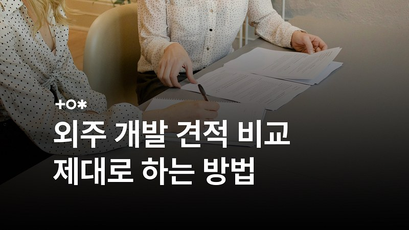
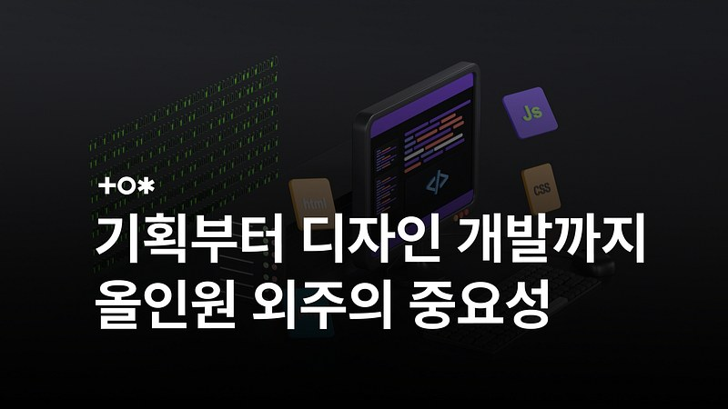
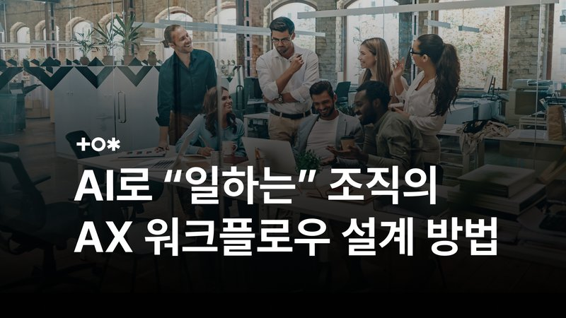
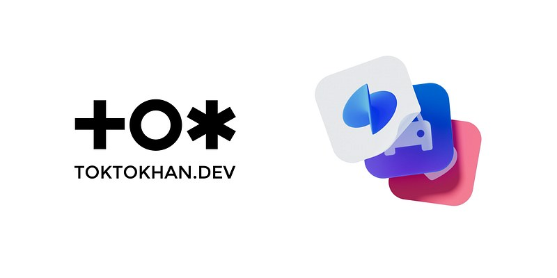
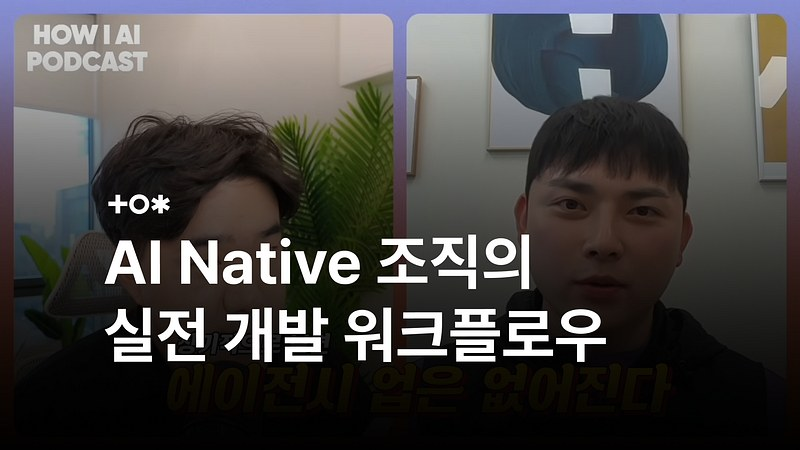

우리의 생각
파트너 똑똑한개발자의 실제 인사이트를 함께 발행합니다.
AI PoC란? 기업 AI 도입 전 반드시 필요한 'PoC' 알아보기
AI · AX기업 AI 도입, 전면 구축 전에 PoC로 먼저 검증해야 하는 이유.
우리 회사에도 AI 에이전트가 필요할까? 5분 체크리스트
AI · AX도입이 필요한 조직의 신호 — 5분 만에 자가진단해 보세요.

500만 원 vs 2,000만 원, 개발 외주 견적 비교 제대로 하는 법
발주 가이드같은 앱인데 견적이 4배 차이 나는 이유를 뜯어봅니다.

외주개발, 왜 올인원 턴키 팀과 함께 해야 할까?
발주 가이드기획·디자인·개발을 따로 맡기면 실패하는 구조적 이유.

AI 도입과 AX는 다르다 — 성과를 만드는 업무 설계 3가지
AI · AX도입했는데 성과가 없다면, AX와의 결정적 차이를 봐야 합니다.

토스 안에서 미니게임을? 똑똑한개발자 × 앱인토스
프로젝트토스와 함께 미니게임을 만든 프로젝트 비하인드.

기획·디자인·개발을 하나로 — AI 네이티브 에이전시 운영법
일하는 방식'프로덕트 빌더'로 팀을 운영하는 방식, 빌더 조쉬와의 대화.
기업용 AI 도입, 왜 거버넌스가 먼저 필요할까?
AI · AX데이터 유출·통제 불능을 막는 AI 거버넌스 설계법.
이 주제의 첫 글을 준비 중입니다
다른 카테고리의 글을 먼저 읽어보세요.